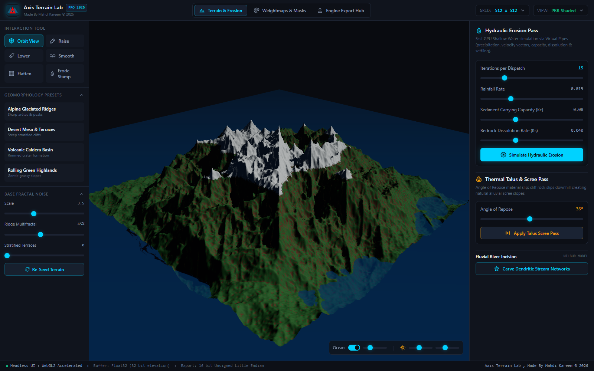

Author 16-bit/32-bit heightmaps, simulate physical shallow-water hydraulic and thermal erosion in real-time, generate 4-channel biome splatmaps, and export production-ready packages for Godot Terrain3D and Unreal Engine 5. Standalone under 10 MB.

A clean, dark workspace featuring continuous GPU erosion, multi-channel biome mask baking, and 1-click game engine export pipelines.
No multi-gigabyte bloat. No subscription paywalls. Just instant native GPU geomorphology on your desktop.
Real-time shallow water hydrodynamic simulation with virtual pipe flux conservation, bedrock dissolution, sediment transport capacity, deposition, and evaporation.
Angle of Repose material slip dynamics (25° - 48°) modeling realistic physical rock shattering, mechanical cliff weathering, and alluvial scree fans at valley bases.
Stream power drainage routing carving natural dendritic riverbeds and canyon networks across macro-terrains, creating authentic hydrological connectivity.
Real-time normal dot-product slope angles, Laplacian curvature ridges, altitude bands, and Topographic Wetness Index (TWI) packed into a single RGBA texture.
Continuous mesh raycast brushes: Raise, Lower, Smooth, Flatten plateau, and Hydraulic Stamp. 5 viewport modes including PBR multi-material and wireframe.
Seamless 1-click export pipelines for Godot 4.x Terrain3D and Unreal Engine 5 Landscape components with calibrated altitude scaling and weightmap layers.
No conversion scripts or manual channel swizzling. Direct exports optimized for Godot 4 and Unreal Engine 5.
Fully complies with the Terrain3D storage specification, generating high-precision heightmaps and 32-slot control maps.
terrain3d_config.json with exact vertex spacing and height bounds.
Conforms strictly to Epic Games Landscape technical guidelines to prevent visual seams across World Partition streaming proxies.
Layer_Rock, Layer_Grass, Layer_Dirt, Layer_Snow).
Z = HeightRange × 100 / 512) for 1:1 UE5 landscape actor match.
A modern, native Rust + WebGL2 architecture engineered for instant desktop workflow vs gigabyte legacy suites.
| Feature | Axis Terrain Lab (v1.0) | QuadSpinner Gaea 2 | World Creator 2024 | World Machine |
|---|---|---|---|---|
| Binary Size | ~9.1 MB | ~1.8 GB | ~2.4 GB | ~450 MB |
| Startup Time | Instantaneous (< 0.4s) | 6s – 15s | 8s – 20s | 5s – 12s |
| Idle RAM Footprint | ~65 MB | 1.2 GB – 4 GB | 2 GB – 6 GB | 800 MB – 2 GB |
| Real-Time GPU Hydraulic | Yes (Continuous 60 FPS) | Node baking pass | GPU preview | CPU slice baking |
| Godot Terrain3D Bridge | Native 1-Click (r16 + Control Map) | Manual export | Plugin required | Manual setup |
| UE5 Component Grid Clamping | Yes (1009 / 2017) | Manual clamp | Bridge plugin | Manual crop |
| License & Pricing | 100% Free & Open Source (MIT) | Commercial ($99 – $299) | Commercial ($289 – $689) | Commercial ($119 – $299) |
Select your preferred Windows distribution. Zero subscriptions, zero telemetry, 100% offline standalone execution.
Zero installation required. Single self-contained .exe with all assets embedded. Run from USB drive or desktop.
Standard Windows setup wizard with Start Menu shortcut, desktop icon, and a clean Windows uninstaller.
Download Setup InstallerWiX Windows Installer (.msi) package designed for system administrators, group policies, and silent deployments.
Download MSI PackageSystem Requirements: 64-bit Windows 10 or Windows 11 with Microsoft Edge WebView2 runtime (pre-installed on modern Windows 10 & 11).